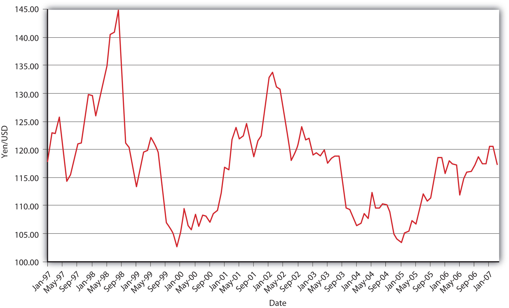
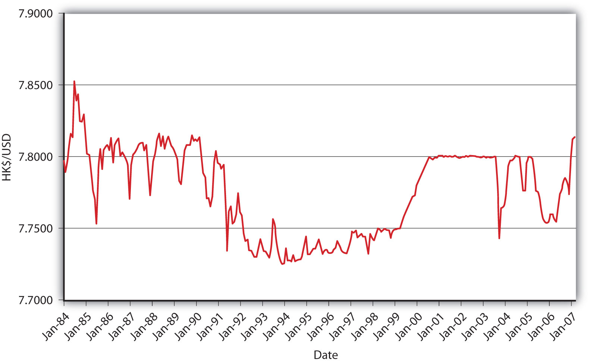

Problems ensue when the central bank runs out of reserves, as it did in Thailand in 1997. The International Monetary Fund (IMF) often provides loans to countries attempting to defend the value of their currencies. It doesn’t really act as an international lender of last resort, however, because it doesn’t follow Hamilton’s née Bagehot’s Law. It simply has no mechanism for adding liquidity quickly, and the longer one waits, the bigger the eventual bill. Moreover, the IMF often forces borrowers to undergo fiscal austerity programs (high government taxes, decreased expenditures, high domestic interest rates, and so forth) that can create as much economic pain as a rapid depreciation would. Finally, it has created a major moral hazard problem, repeatedly lending to the same few countries, which quickly learned that they need not engage in responsible policies in the long run because the IMF would be sure to help out if they got into trouble. Sometimes the medicine is indeed worse than the disease!
Trouble can also arise when a central bank no longer wants to accumulate international reserves (or indeed any assets) because it wants to squelch domestic inflation, as it did in Germany in 1990–1992. Many fear that China, which currently owns over $1 trillion in international reserves (mostly USD), will find itself in this conundrum soon. The Chinese government accumulated such a huge amount of reserves by fixing its currency (which confusingly goes by two names, the yuan and the renminbi, but one symbol, CNY) at the rate of CNY8.28 per USD. Due to the growth of the Chinese economy relative to the U.S. economy, E* exceeded Epeg, inducing the Chinese, per the analysis above, to sell CNY for international reserves to keep the yuan permanently weak, or undervalued relative to the value the market would have assigned it.
Recall that undervaluing the yuan helps Chinese exports by making them appear cheap to foreigners. (If you don’t believe me, walk into any Wal-Mart, Target, or other discount store.) Many people think that China’s peg is unfair, a monetary form of dirty pool. Such folks need to realize that there is no such thing as a free lunch. To maintain its peg, the Chinese government has severely restricted international capital mobility via currency controls, thereby injuring the efficiency of Chinese financial markets, limiting foreign direct investment, and encouraging mass loophole mining. It is also stuck with a trillion bucks of relatively low-yielding international reserves that will decline in value when the yuan floats (and probably appreciates strongly), as it eventually must. In other words, China is setting itself up for the exact opposite of the Southeast Asian Crisis of 1997–1998, where the value of its assets will plummet instead of the value of its liabilities skyrocketing.
In China’s defense, many developing countries find it advantageous to peg their exchange rates to the dollar, the yen, the euro, the pound sterling, or a basket of such important currencies. The peg, which can be thought of as a monetary policy target similar to an inflation or money supply target, allows the developing nation’s central bank to figure out whether to increase or decrease MB and by how much. A hard peg or narrow band effectively ties the domestic inflation rate to that of the anchor country, As noted in Chapter 18 "Foreign Exchange", however, not all goods and services are traded internationally, so the rates will not be exactly equal. instilling confidence in the developing country’s macroeconomic performance.
Indeed, in extreme cases, some countries have given up their central bank altogether and have dollarized, adopting USD or other currencies (though the process is still called dollarization) as their own. No international law prevents this, and indeed the country whose currency is adopted earns seigniorage and hence has little grounds for complaint. Countries that want to completely outsource their monetary policy but maintain seigniorage revenue (the profits from the issuance of money) adopt a currency board that issues domestic currency but backs it 100 percent with assets denominated in the anchor currency. (The board invests the reserves in interest-bearing assets, the source of the seigniorage.) Argentina benefited from just such a board during the 1990s, when it pegged its peso one-to-one with the dollar, because it finally got inflation, which often ran over 100 percent per year, under control.
Fixed exchange rates not based on commodities like gold or silver are notoriously fragile, however, because relative macroeconomic changes in interest rates, trade, and productivity can create persistent imbalances over time between the developing and the anchor currencies. Moreover, speculators can force countries to devalue (move Epeg down) or revalue (move Epeg up) when they hit the bottom or top of a band. They do so by using the derivatives markets to place big bets on the future exchange rate. Unlike most bets, these are one-sided because the speculators lose little money if the central bank successfully defends the peg, but they win a lot if it fails to. Speculator George Soros, for example, is reported to have made $1 billion speculating against the pound sterling during the ERM balance of payments crisis in September 1992. Such crises can cause tremendous economic pain, as when Argentina found it necessary to abandon its currency board and one-to-one peg with the dollar in 2001–2002 due to speculative pressures and fundamental macroeconomic misalignment between the Argentine and U.S. economies. (Basically, the United States was booming and Argentina was in a recession. The former needed higher interest rates/slower money growth and the latter needed lower interest rates/higher money growth.)
Developing countries may be best off maintaining what is called a crawling target or crawling peg. Generally, this entails the developing country’s central bank allowing its domestic currency to depreciate or appreciate over time, as general macroeconomic conditions (the variables discussed in Chapter 18 "Foreign Exchange") dictate. A similar strategy is to recognize imbalances as they occur and change the peg on an ad hoc basis accordingly, perhaps first by allowing the band to widen before permanently moving it. In those ways, developing countries can maintain some FX rate stability, keep inflation in check (though perhaps higher than in the anchor country), and hopefully avoid exchange rate crises.
What sort of international monetary regimes are consistent with Figure 19.7 "Dollar-yen exchange rate, 1997–2007" and Figure 19.8 "Hong Kong–USD exchange rate, 1984–2007"?
Figure 19.7 Dollar-yen exchange rate, 1997–2007
Figure 19.8 Hong Kong–USD exchange rate, 1984–2007
Figure 19.7 "Dollar-yen exchange rate, 1997–2007" certainly is not a fixed exchange rate regime, or a managed float with a tight band. It could be consistent with a fully free float, but it might also represent a managed float with wide bands between about ¥100 to ¥145 per dollar.
It appears highly likely from Figure 19.8 "Hong Kong–USD exchange rate, 1984–2007" that Hong Kong’s monetary authority for most of the period from 1984 to 2007 engaged in a managed float within fairly tight bands bounded by about HK7.725 and HK7.80 to the dollar. Also, for three years early in the new millennium, it pegged the dollar at HK7.80 before returning to a looser but still tight band in 2004.